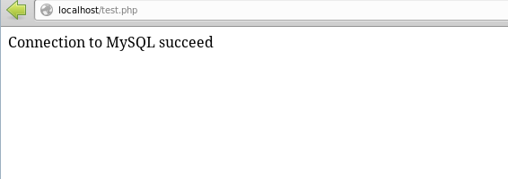

Some Project-Building Tips Anton Gerdelan [gerdela@scss.tcd.ie] 27 Nov 2013
Web developers set up a local server on their machine to test their site
before uploading to the real server. Setting up on a real server is exactly the
same process, except that it has a proper web address, or registered domain
name.
Need a database? → LAMP
Don't need a database? → Mongoose
Get project running on a local server, then try it with several different
browsers.
Some settings files usually need tweaking after install for Apache and PHP
Check that Apache2 is Running
Restart (or start) Apache2 server
Browse to http://127.0.0.1/ to see if
basic HTTP works (HTML index page)
On WAMP this is c:\wamp\www - you can put your HTML here
Check that PHP5 is Running
Create a simple test.php file in your web folder (same place as the
.html):
Check that MySQL is Running
You can use the phpmyadmin tool to admin your database server:
http://127.0.0.1/phpmyadmin/
(or click in WAMP menu)
Can also do this with the mysql terminal (also from WAMP menu): mysql
Create a New Database with phpmyadmin
Click on "Databases" tab
Choose a name and format (I used default format)
Create a Table in the new Database
You can create tables in phpmyadmin (or the mysql terminal) too
Click on your new db in the left-hand thingy
I'll make a table called "logins" with 2 columns of data.
Guess what they will be?
Add a Couple of Default Entries
"Adding" an entry to a table is called "INSERT"
Click on the "insert" tab
Note that when you do this PHPMYADMIN also shows you the SQL query (code)
to use to do this from the SQL terminal or in a PHP script: INSERT INTO `antonsdb`.`logins` (`name`, `password`) VALUES ('anton', 'secret');
Note that this is not the proper way to store a password securely
Query the Database from Our PHP Page
Connect to mysql database in PHP page:
We use PHP because it's server-side, so the user can't see our login
details
Note: set up user and password first - generally don't use the admin user
to make queries and things.
New user using SQL Buddy in WAMP
In mysql terminal this is: create user 'antonsql'@'localhost' IDENTIFIED BY 'trinity';
In myphp admin I gave my "antonsql" user access to my database in the "Priviliges" tab

Now We Can SELECT/INSERT/etc.
To interact with the database we make a query in a format called SQL
(structured query language)
SELECT means "get things from a database table(s)"
INSERT means "add an entry to a database table
let's use SELECT to list all the user names and passwords in the
logins table that I created
In PHP when you say echo it means "generate this as the HTML that
appears on the user's page"
I use echo to build an HTML table containing the user names and
passwords
You could use a similar query to check if an entered user name and password
matches one in the database
Extra Info
SQL queries can get mixed results from unions or intersections between tables: "give me the names of all male users over 21 who have bought 1 or more books with the 'programming' keyword"
This gets an intersection of matches in several tables, using SELECT
The method used is called "relational algebra"
It's horrible, and I avoid using it because it doesn't map well to
low-level programming (which I like)
Still the most convenient way of managing a web-served database that can expand organically
In the 90s/2000s "Object Oriented" databases were a popular alternative,
which mapped well to languages like Java. Gone out of fashion again.
An emerging trend is databases with triplestore format, which have a
bit more natural information about links between items; IS A, HAS A
Databases linked to the semantic web is a popular new trend; pages
can store more meaningful information in HTML5 tags, for example, hooks to swap
text to the language translation based on browser setting.